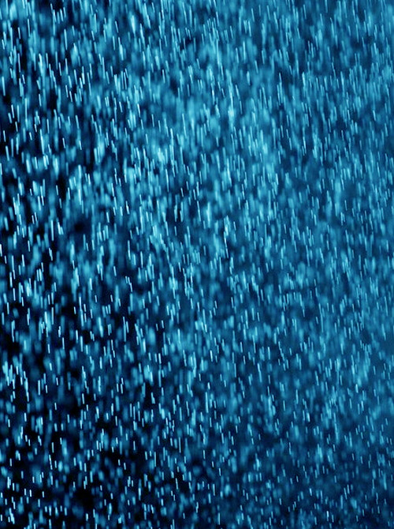

空から水滴が落ちてくる天候のこと。また、その水滴。大気中に含まれる水蒸気が、気温が下がったり上昇気流に運ばれたりすることで凝結して、細かな水滴でできた雲となり、雲の中で雨粒が成長し、やがて大きくなった雨粒が地上に落下することで、雨となる。
RAIN
The weather in which a drop of water is falling from the sky. The drop of water. The temperature is to fall and be carried to an updraft, and the water vapor included in the atmosphere is coagulated, and a raindrop will be cloud made from a small drop of water, and grows, is that the raindrop which became big soon falls on the ground and is rain in the cloud.

xigure_blue_PT
24/27